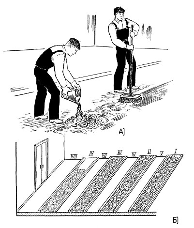
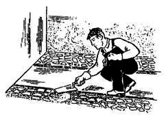

-

8(0152)31-25-61
-

kst@ggkst.by
-

http://ggkst.by
8(0152)31-25-61
kst@ggkst.by
http://ggkst.by
Карта 5: Устройство (набивка) одноцветного мозаичного покрытия
Состав технологических операций. Установка и выверка маяков; укладка и разравнивание мозаичного лицевого слоя покрытия;
уплотнение мозаичного состава; снятие маячных реек и укладка мозаичного раствора в смежные полосы-захватки.
Механизмы, инструменты, приспособления, инвентарь. Виброрейка или вибратор; электрощетка. Стальная и волосяная щетки; ведра; стальные штыри;
молоток; маячные рейки; плиточная лопатка; растворная лопата; разметочный шнур; рулетка; складной метр; деревянный угольник; правило и уровень;
киянка деревянная или резиновая; трамбовка; тележка со сменными контейнерами для раствора.
Материалы. Мозаичный раствор заданного состава, прочности и цвета подвижностью 2 см. Полоски из толя или рубероида.
Схема организации рабочего места. Помещение, где укладывают лицевой слой мозаичного покрытия, должно быть освобождено от посторонних предметов.
Длина электрокабелей и места подключения механизмов должны обеспечить возможность уплотнения мозаичной смеси по всей площади помещения.
Последовательность выполнения технологических операций. Работы начинают после набора прочности уложенной прослойки.
Установка и выверка маяков. Вдоль длинных сторон помещения рулеткой размечают полосы-захватки шириной 1,5 м для установки маяков.
В качестве маяков используют деревянные рейки 1 (рис. 1) или стальные трубы. Маяки начинают устанавливать от стены, где вынесена отметка верхнего покрытия пола.
Положение маяков в плане и по высоте закрепляют растворными марками 2. Точность установки маяков контролируют рейкой 3 с уровнем.
При необходимости маяки втапливают в растворные марки или, наоборот, приподнимают, добавляя раствор.
Укладка и разравнивание мозаичной смеси лицевого слоя покрытия. До укладки мозаичной смеси поверхность прослойки смачивают водой и огрунтовывают цементным
молоком (рис. 2, а).
Рис. 1. Установка маячных реек: 1 - маячные рейки, 2 - растворные марки, 3 - рейка с уровнем
Рис. 2. Укладка мозаичной смеси: а - огрунтовка основания, б - последовательность (I - VIII) укладки мозаичной смеси
Начинают укладывать мозаичную смесь от стены, противоположной входу в помещение, полосами-захватками шириной 1,5 м, ограниченными маячными рейками. Полосы заполняют раствором через одну (рис. 2, б). В полосах-захватках, примыкающих к стенам, укладывают полоски толя, прижимая их растворными лепками, Мозаичную смесь укладывают несколько выше верха маячных реек, разравнивают лопатой и проверяют правилом. Чтобы не смещать крошку крупной фракции, смесь не разравнивают правилом. В пониженные места добавляют мозаичную смесь, разравнивая ее растворной лопаткой (рис. 3).
Рис. 3. Выравнивание мозаичной смеси в полосах-захватках растворной лопаткой
Уплотнение мозаичного состава. Виброрейку устанавливают на маячные рейки поперек полосы (рис, 4, а), чтобы ее концы опирались на маячные рейки, и медленно
передвигают до появления на поверхности цементного молока.
В помещениях небольшой площади или в стесненных местах мозаичную смесь уплотняют катком (рис. 4, б) или металлической трамбовкой. Излишки цементного молока
с поверхности удаляют кистью-макловицей (рис. 4, в).
Прочность покрытия зависит от качества уплотнения мозаичной смеси.
Снятие маячных реек и укладка мозаичного раствора в смежные полосы-захватки. После твердения уложенной смеси (через 1 сут.) маячные рейки или трубы осторожно
удаляют. Кромки уложенных полос и основание (между соседними полосами) смачивают водой и огрунтовывают цементным молоком, после чего укладывают мозаичный раствор.
Уложенную смесь разравнивают плиточной лопаткой. Горизонтальность выровненного раствора контролируют правилом, опираемым на уложенные ранее полосы.
Мозаичный раствор, уложенный между смежными полосами, уплотняют виброрейкой или поверхностным вибратором. Уплотнение продолжают до появления на поверхности
цементного молока, излишки которого удаляют с поверхности с помощью совка и кистн-макловицы.
Рис. 4. Уплотнение мозаичной смеси: а - виброрейкой, б - катком, в - удаление излишков цементного молока
Контроль качества. Внешним осмотром уложенного покрытия проверяют равномерность заполнения лицевого слоя мраморной крошкой, отсутствие потеков
цементного молока, закрывающего крошку. В местах примыкания к стенам, колоннам должны быть прокладки из толя или рубероида, предупреждающие появление
трещин в покрытии.
Трудовые затраты. Норма времени на устройство 1 м одноцветного (монолитного) мозаичного покрытия - 0,7 чел-ч; норма выработки на 1 чел-дн - 11,4 м2.
Техника безопасности. К работе с поверхностным вибратором, виброрейкой, электрощеткой допускаются лица, прошедшие практическое обучение и
инструктаж по технике безопасности. Работу выполняют в резиновых противовибрационных перчатках и резиновой обуви. Через каждые 30 мин работы вибратор
выключают на 5...7 мин для охлаждения. Запрещено перемещать вибратор за шланговый провод или кабель.
Контрольные вопросы. Как укладывают маячные рейки трапециевидного сечения при устройстве лицевого слоя мозаичных полов?
В каких случаях используют электрощетку до укладки лицевого слоя мозаичного покрытия? Где укладывают прокладки из рубероида, предупреждающие появление трещин?
Из каких технологических операций состоит укладка мозаичной смеси? Какие правила техники безопасности необходимо выполнять при работе с вибратором?
Карта 6 — Набивка многоцветного мозаичного покрытия